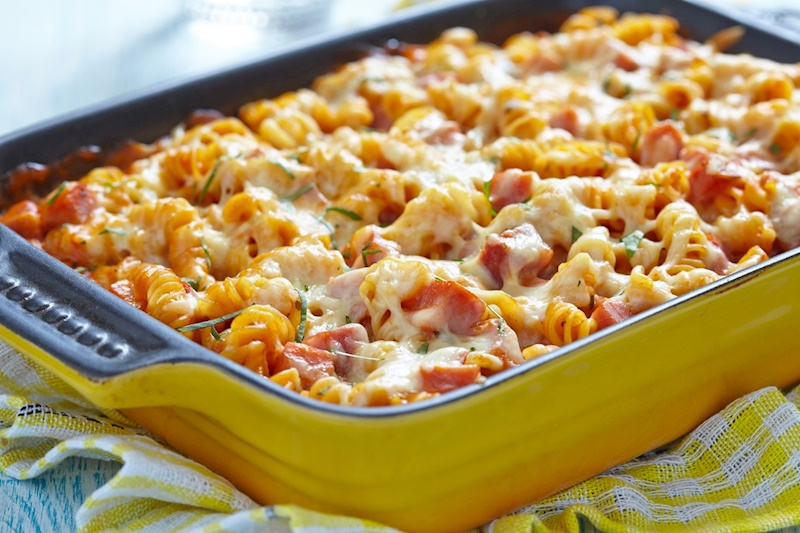
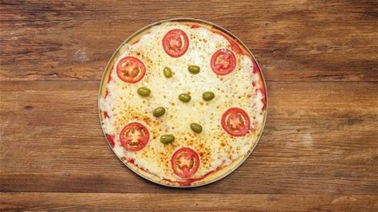

1- Receita Mac & Cheese

Ingredientes do macarrão com queijo
- 100 g de manteiga
- 100g de farinha de trigo
- 3 copos de leite fervendo
- 100g de leite parmesão ralado
- 150g de queijo cheddas
- sal de pimenta-do-reino a gosto
- 350g de macarrão
Modo de preparo
- Comece colocando o macarrão para cozinhar em uma panela com água fervente. O recomendado é que para cada 100 g de macarrão, se utilize 1 litro de água para não correr o risco de grudar. Com o seu macarrão no fogo, é hora de preparar o molho.
- O primeiro passo para o delicioso macarrão com queijo é preparar um roux, a famosa mistura de farinha e manteiga, muito utilizada para engrossar molhos. Inicie o processo levando uma panela ao fogo e deixando-a ficar bem quente.
- Acrescente a manteiga e espere derreter. Em seguida, adicione a farinha de trigo, e, como o auxílio de um fouet, misture tudo muito bem, até que a farinha seja incorporada à manteiga.
- Acrescente o leite quente e mexa bem. Uma dica do TudoGostoso é utilizar leite integral. Como esse tipo de leite tem gordura, ele dará uma boa textura para o molho, sem deixá-lo aguado.
- Chegou a hora de acrescentar os queijos. Nós escolhemos o parmesão ralado, muito usado no preparo de macarrões aqui no Brasil, e o tradicional cheddar. Mas você pode escolher qualquer outro de sua preferência, certificando-se de que ele é um queijo que derrete bem.
- Quando os queijos já estiverem bem derretidos no molho, confira o tempero e acrescente sal e pimenta-do-reino a gosto. Por último, escorra a massa de macarrão e coloque-a dentro da panela do molho para misturar.
2- Receita Pizza de liquidficador

Ingredientes para massa
- 1 xícara (chá) de leite
- 1 ovo
- 1 colher (chá) de sal
- 1 colher (chá) de açúcar
- 1 colher (sopa) de margarina
- 1 e 1/2 xícara (chá) de farinha de trigo
- 1 colher (sobremesa) de fermento em pó
- 1/2 lata de molho de tomate
Sugestão de recheio
- 250 g de mussarela ralada grossa
- 2 tomates fatiados
- azeitona picada
- orégano a gosto
Modo de preparo
- No liquidificador bata o leite, o ovo, o sal, o açúcar, a margarina, a farinha de trigo e o fermento em pó até que tudo esteja encorporado.
- Despeje a massa em uma assadeira para pizza untada com margarina e leve ao forno preaquecido por 20 minutos.
- Retire do forno e despeje o molho de tomate.
- Cubra a massa com mussarela ralada, tomate e orégano a gosto.
- Leve novamente ao forno até derreter a mussarela.